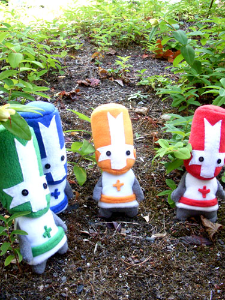

THE KINGDOM'S FIELD GUIDE · UNOFFICIAL FAN PROJECT
Every knight has a story.
Explore the colorful chaos of Castle Crashers. Browse sourced game facts, search the archive, and ask questions answered from a transparent fact sheet.

01 / THE LIBRARY
Explore the kingdom
Each entry links back to its source.
Add more entries to
facts.json
as your research grows.
02 / ASK THE ARCHIVE
Ask a question.
Get a sourced answer.
Answers are drawn from the site's fact sheet. If there isn't a matching fact, the archive will tell you instead of guessing.
03 / THE GALLERY
Scenes from the kingdom
Upload your own authorized screenshots to
assets/images/
and replace the sample filenames in
gallery.json.